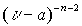
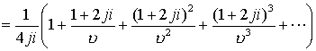
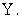
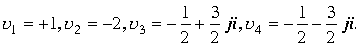
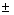
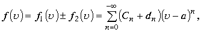

|
В. И. ЕЛИСЕЕВ ВВЕДЕНИЕ В МЕТОДЫ ТЕОРИИ
ФУНКЦИЙ ПРОСТРАНСТВЕННОГО КОМПЛЕКСНОГО ПЕРЕМЕННОГО |
|
1.4.2. Ряд Лорана.
Ряд
вида , - фиксированная точка пространства, включая точки изолированного направления, - коэффициенты – пространственные комплексные числа в том числе и из пространства делителей нуля,Называется рядом Лорана.
Ряд Лорана есть обобщение ряда Тейлора на отрицательные степени разложения функции в ряд. Ряд Тейлора входит в ряд Лорана как составная часть, к разложению функции по положительным степеням
, добавляется разложение по отрицательным степеням.Если ряды сходятся, то сходится и ряд Лорана. Область сходимости ряда по положительным степеням разложения функции в ряд есть сфера радиуса сходимости . В области этой сферы лежит и область сходимости ряда по изолированному направлению делителей нуля. Если R=0, то ряд сходится только в точке a, если , то ряд сходится во всем пространстве Y.
Ряд по отрицательным степеням разложения функции сходится в сфере сходимости
. Если r<R, то ряд сходится в области заключенной между двумя концентрическими сферами . На эту область накладывается область сходимости рядов по изолированному направлению. Сферы в пространстве это прежде всего поверхностиДля точек, лежащих вне этих областей будет расходиться один из рядов, а следовательно будет расходиться и общая сумма. Критические точки в пространстве
Y в конечном счете определяются из общего условия разложения функции на линейные или квадратные многочлены. Согласно этим условиям в пространстве имеются два вида критических точек, таких что подстановка одного из вида критических точек в другой переводит произведение линейных множителей в произведение делителей нуля. В связи с этим два вида критических точек в полном пространстве Y, однозначно определяют область сходимости ряда Лорана и нет необходимости дополнительного исследования областей делителей нуля. Стремление к критической точки по изолированному направлению по определенному закону, приводит к критической точки другого вида. Пространственная точка включает в себя все варианты разложения функции на линейные и квадратные множители. Поэтому в пространстве справедлива теорема Абеля и Вейерштрасса.Если имеется область
, учитывающая все виды критических точек, то в ней ряд сходится равномерно и сумма егоФункция
|
, |
(1.60.) |
где
,где
-элемент пространственной поверхностиДля определения коэффициентов ряда умножим правую и левую часть ряда на
получим соотношение , которое проинтегрируем по поверхности . Для любого целого n выполняется соотношение
= ,. Откуда получаем выражение для коэффициентов ряда Лорана в виде.
,. Откуда получаем выражение для коэффициентов ряда Лорана в виде.
Пример.
, знаменатель имеет четыре критические точки :
, поэтому функция может быть разложена по двум равноценным вариантам:
Каждую из полученных дробей обозначим по порядку
, разложим в ряд Тейлора.ряд сходится в границах сферы .
, ряд сходится в границах сферы  .Суммируя коэффициенты при одинаковых степенях получим ряд для исходной функции
.Суммируя коэффициенты при одинаковых степенях получим ряд для исходной функции
Ряд сходится в границах сферы
.
ряд сходится для точек сферы
.ряд сходится для точек сферы
.Суммируем коэффициенты при одинаковых степенях
и так далее
Суммируя ряды
получаем тейлоровское разложение функции по второму варианту разложения функции в пространстве на дроби. В силу совпадения коэффициентов при одинаковых степеняхПроизведем разложение исходной функции по отрицательным степеням.
ряд сходится для всех
.ряд сходится для всех
.Складывая коэффициенты при одинаковых степенях
Таким образом , функция разложена в ряд по отрицательным степеням
ряд сходится для всех  .Далее произведем разложение функции по второму варианту
.Далее произведем разложение функции по второму варианту

ряды сходятся для всех точек сферы
. Суммируя коэффициенты при одинаковых степеняхТаблица коэффициентов совпадает с предыдущей. Разложение функции по отрицательным степеням в пространстве также является единственным. В этом варианте корни определенные из условия существования делителей нуля не входят в область сходимости функции при разложении , поэтому разложение должно ограничиваться первым вариантом разложения.
Рассмотрим разложение исходной функции по положительным и отрицательным степеням.
Полученный ряд Лорана сходится в сферическом кольце
. Рассмотрим разложение по второму варианту.Ряд сходится на сфере радиуса
. Сферическое кольцо в котором сходится ряд Лорана для этого разложения сжалось до поверхности сферы. В этом случае корни многочлена перестают быть изолированными точками для функции.Проведем обобщение результатов примера. Знаменатель функции
Точками. Для определения областей регулярности функции целесообразно дробь разложить на простейшие дроби .
Введем обозначения, обозначив последовательно каждую из дробей по порядку
Разложение по положительным степеням дробей
имеет радиус сходимости
Сумма функций
Разложение суммы функций
Разложение суммы функций
по отрицательным степенямЕсли раскладывать функцию по положительным и отрицательным степеням
, используя различные варианты разложения дробей, то область сходимости ряда будет изменяться.Например, разложение функции по схеме
, где знакопределяет разложение по положительным или отрицательным степеням, дает ряд, имеющий область сходимости поверхность сферы
Для ряда
область сходимости определяется соотношениемОднако нельзя использовать разложение из одного эквивалентного варианта с разложением из другого эквивалентного разложения.
Разложение дроби на простейшие ,в знаменателе которой стоит квадратный многочлен, существенным образом зависит от области определения дроби как функции в пространстве и способа разложения этой дроби в ряды. Возможны варианты, при которых разложение по одному варианту не допускает разложение по другому. Если область определения ограничена только верхним или только нижним полупространством , то разложение на условии существования делителей нуля недопустимо , так как исключаются условия для определения критических точек.
Способ и варианты разложения тесно связаны с областями сходимости ряда и критическими точками функции.
Иными словами, если критические точки эквивалентных разложений в пространстве не входят в область сходимости ряда то это разложение не действительно.
Пример. Рассмотрим различные варианты разложения функции
в областях пространства  Функция регулярна в областиНайдем разложение функции в ряд Лорана в этих областях. Знаменатель дроби, которая представляет функцию имеет четыре корня в пространстве, которые и диктуют распределение в пространстве областей регулярности функции .Этими корнями являются:
Представим функцию в виде суммы простых дробей:

Обозначим дроби по порядку через
. ЕслиЗнак
в символе функции отвечает за разложение дроби по положительным или отрицательным степеням. Сумма функций сходится дляВ области разность функций
Ряд имеет больше радиус сходимости, чем ряд предыдущей суммы:
Функция разлагается в ряд по положительным степеням в пространстве и имеет радиус сходимостиВ силу равенства
ряды от сумм функций равны. Для доказательства достаточно вычислить коэффициенты  при равных степенях n переменной
при равных степенях n переменной 
При
имеем: . Знак минус переходит в плюс, вследствии минуса перед квадратной скобкой в исходном разложении функции на дроби.Рассмотрим область
Функцию разложим по отрицательным степенямВ этом случае сумма функций представляет ряд с отрицательными и положительными степенями переменной  Следующую сумму функций также представим в виде ряда с положительными и отрицательными степенями
Следующую сумму функций также представим в виде ряда с положительными и отрицательными степенями
Ряд сходится на сфере
Таким образом, если функция
в области разложить в ряд Лорана по схеме входящих в нее дробейто полученный ряд Лорана будет иметь область сходимости в виде сферы  В этом случае допускается разложение только по второму эквивалентному варианту.
В этом случае допускается разложение только по второму эквивалентному варианту.
Если функцию разложить только по отрицательным степеням  по схеме
по схеме
то ряд будет сходиться для
Коэффициенты при одинаковых степеняхПримеры показывают, что наличие изолированной оси в пространстве
влияет на область сходимости рядов Лорана.В соответствии с алгебраическими операциями над степенными рядами заключаем. Если даны функции
регулярные в окрестности точки представленные рядамигде первый ряд сходится в сфере а ряд второй в сфере причем тогда имеют место разложения:

Ряды сходятся в сфере
Мини оглавление:
[0], [1.1.1, 1.1.2, 1.1.3, 1.1.4, 1.1.5, 1.1.6, 1.1.7, 1.1.8, 1.2, 1.2.1, 1.2.2, 1.2.2.a, 1.2.2.b, 1.2.2.c, 1.2.2.d, 1.2.2.e, 1.2.2.f, 1.2.2.g, 1.2.2.h, 1.2.3, 1.3.1, 1.3.2, 1.3.3, 1.3.4, 1.3.5, 1.3.6, 1.4.1, 1.4.2, 1.5, 1.6, 1.7.1, 1.7.2, 1.7.3.1, 1.7.3.2, 1.7.3.3, 1.7.4.1, 1.7.4.2, 1.8.1], [2.1, 2.2],[3.1, 3.2, 3.3, 3.4.1, 3.4.2, 3.4.3, 3.4.4, 3.4.5],[4.1, 4.2, 4.3, 4.4],[5.1, 5.1.Рис.52, 5.2, 5.3, 5.4, 5.4.Т1, 5.4.Т2, 5.4.Т3, 5.5.1, 5.5.2, 5.5.3, 5.5.4],[6.1.1, 6.1.2, 6.2.1, 6.2.2, 6.2.3, 6.2.4, 6.2.5, 6.3, 6.4.1, 6.4.2, 6.5.1, 6.5.2],[7.1, 7.2, 7.3, 7.4, 7.5, 7.6, 7.7.1, 7.7.2, 7.8.1, 7.8.2, 7.8.3, 7.9],[8.1, 8.2.1, 8.2.2, 8.3, 8.4, 8.5, 8.6, 8.6.T1, 8.7, 8.8.1, 8.8.2, 8.8.3, 8.9.1, 8.9.2, 8.9.3, 8.10, 8.10.T2, 8.10.T3],[9.1, 9.2, 9.3, Рис.88, 89, 90, 91, 92, 93, 94, 95, 96, 97, 98, 99, 100],[10.1, 10.2, 10.3, 10.4, 10.5, 10.6, 10.7, 10.8, 10.9, 10.10, 10.11, 10.12, 10.13, 10.14, 10.15.1, 10.15.2, 10.16.1, 10.16.2, 10.17, 10.18],[11]
Размещенный материал является электронной версией книги: © В.И.Елисеев, "Введение в методы теории функций пространственного комплексного переменного", изданной Центром научно-технического творчества молодежи Алгоритм. - М.:, НИАТ. - 1990. Шифр Д7-90/83308. в каталоге Государственной публичной научно-технической библиотеки. Сайт действует с 10 августа 1998.
E-mail: mathsru@gmail.com